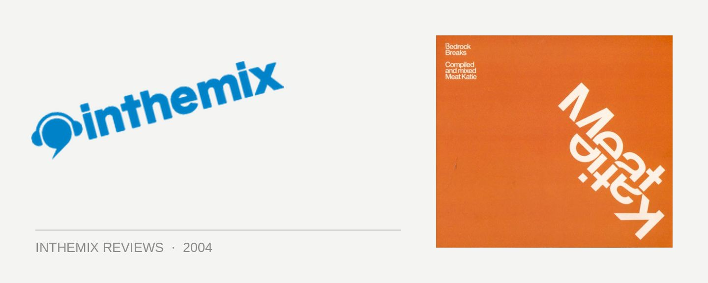

Various Artists - Bedrock Breaks: Mixed by Meat Katie
(Bedrock/Stomp)
While once inextricably linked with a deep and plodding style of nu-school breaks that could reduce a Sydney punter to tears of boredom, Meat Katie is really stamping his mark as a DJ-producer. Now one of the world’s greatest purveyors of dirty, nasty breakbeat, Meat Katie isn’t merely some dude who plays other people’s records: he’s a extremely prolific producer whose material is thrashed by the likes of James Lavelle, Rennie Pilgrim and the Plump DJ’s. Now he has been handpicked by John Digweed to showcase his sound with the latest Bedrock Breaks release: and it plays like a recipe of yummy, scrumptious, nu-school treats.
The first CD consists of some real cutting-edge, underground sounds, and Meat Katie never fails to pluck some incredible tunes out of obscurity. Though a little slow and deep, the atmosphere he manages to build is unrelenting and intense. Starting with the dirty, rumbling basslines of Chris Carter & JHx, he smoothly moves into one of Rennie Pilgrim’s more subdued and atmospheric numbers. Force Mass Motion’s Protect You has one of the deepest, most thundering basslines heard in a long time, while Dylan Rhymes’s Why Me? is really something special, the rising tribal percussion and layered samples building up into some fat, acidy beats. The mixing is tight, concise and flows nicely, making for a slick and smooth journey the listener is unlikely to forget. Nonetheless, it makes for head music rather than body music: not the sort of CD you’d whip out at a house party to build the vibe, it’s what you’d instead listen to with headphones to soak in the textures.
The second CD is a different beast altogether. Considerably more upbeat and rockin’ than the first, it solidly pumps along from beginning to end. The new mix of Meat Katie & Christian J’s Turn Me Out bounces along in a deep, rumbly, nu-school fashion, while Soul of Man and La Liga both build to a climax to leave your heart in your mouth. There is a large proportion of knockout tracks towards the mix’s end, but the choice cut has to be Australia’s own Andy Page with the absolutely wicked Elementalelectrofunk. George Clinton’s effortlessly cool vocals are backed by some dirty nu-school beats: just try not to groove as he delivers his whispers of “Electrofunk… Are you ready for today / cause today is all you’ve got.” Once again the mixing is superslick: technically, you just can’t fault it. Grinding and nasty yet still phat and funky, it grabs hold of you and refuses to let go until the mix is well and truly over.
Not to be missed by those who love it deep and dark but still a little bit pumping, Meat Katie has delivered a first-rate mix with Bedrock Breaks. He’s struck the perfect balance between the proggy depth of nu-school and the fat, chunky beats and basslines of traditional breaks. His faultless mixing peaks and flows very much like a progressive set, so it makes sense that he’s releasing a CD on the Bedrock label. But with the good points of progressive also come the trappings; some may find Bedrock Breaks a little boring, and subject to the same criticisms that have been leveled against nu-school sounds. It’s a little faceless, a little monotonous at times, and often a case of boys flaunting their studio toys. But if you dig Meat Katie’s style of deep, progressive breaks, the CD is superb.
Dark, sinister, yet not without energy, Bedrock Breaks is about as nu-school as you can get without losing the funk. Meat Katie is really kicking it at the moment; rocking a club is one thing, but compiling a slick mix CD that plays well on your stereo and stands repeat listens is a quantum challenge in itself. Meat Katie deserves to be picked up by Global Underground for their next release, as his pioneering cocktail of progressive sounds easily matches the high standards set by that record label. Alongside nu-school godfather Rennie Pilgrim, Meat Katie has established himself as one of the best nu-school producers on the planet. And he ain’t half bad as a DJ either.